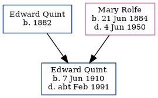

Edward James Quint 1910 - c1991
[ Home ] | [ Calendar ] | [ Surnames Index ] | [ Family History ]A general laborer and the son of Edward Quint (a harbourman) and Mary Rolfe (a domestic general servant)Edward Quint, the third cousin once-removed on the father's side of Nigel Horne, was born in Dover, Kent, England on Jun 7, 19101,2,3,4,5,6 and baptized there at St Mary the Virgin on Jul 23, 1910.
Edward spent all of his life in Kent, England. Throughout his life, he lived at Lansdowne Cottages, Union Road in Dover on Apr 2, 19111; and at 112 Union Road in Dover on Jun 19, 19212, on Sep 29, 19393 and in 1947 (the same place as his parents had been living on Jun 19, 1921).
He died c. Feb 1991 in Dover5.
Parents
- Edward Seagar was born in 1882
- Mary Jane was born on Jun 21, 1884
Citations
- 1911 Census for England & Wales - Findmypast (was age 0 and the son of the head of the household)
- 1921 Census Of England & Wales - Findmypast (was age 11 and the son of the head of the household)
- 1939 Register - Findmypast (was the son of the head of the household)
- England & Wales births 1837-2006 - Findmypast
- England & Wales deaths 1837-2007 - Findmypast
- Kent Baptisms - Findmypast
Media
England & Wales births 1837-2006 - BMD/B/1910/3/PZ/000094/091
Kent Baptisms - GBPRS/CANT/B/96300388
1939 Register - TNA/R39/1714/1714B/012/03
England & Wales deaths 1837-2007 - BMD/D/1991/2/78651892
1921 Census of England & Wales - GBC/1921/RG15/04547/0289/03
Family Tree
Generated by ged2site. Last updated on Nov 13, 2024